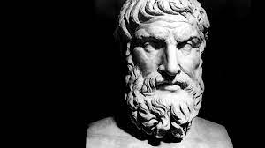

The world goes dark, but not silent. Frightening sounds rush past your ears, and you sense you are traveling great distances in very short amounts of time.
Slowly, the blackness clears, revealing... Athens, 300 B.C. -- A place teeming with wisdom and knowledge.
Would you like to explore the city?
Yeah, I'm not scared.
When you arrive at Athens, a strange old man confronts you. You recognize him as Epicurus,
the famed greek philosopher.

Hello, traveler. I have much wisdom to offer you, if you should choose to accept it. Do you find yourself in need of any guidance?
Choose how you would like to respond:
Yeah, I could definitely use some guidance.
Eh, I've kind of got everything figured out. I'm good